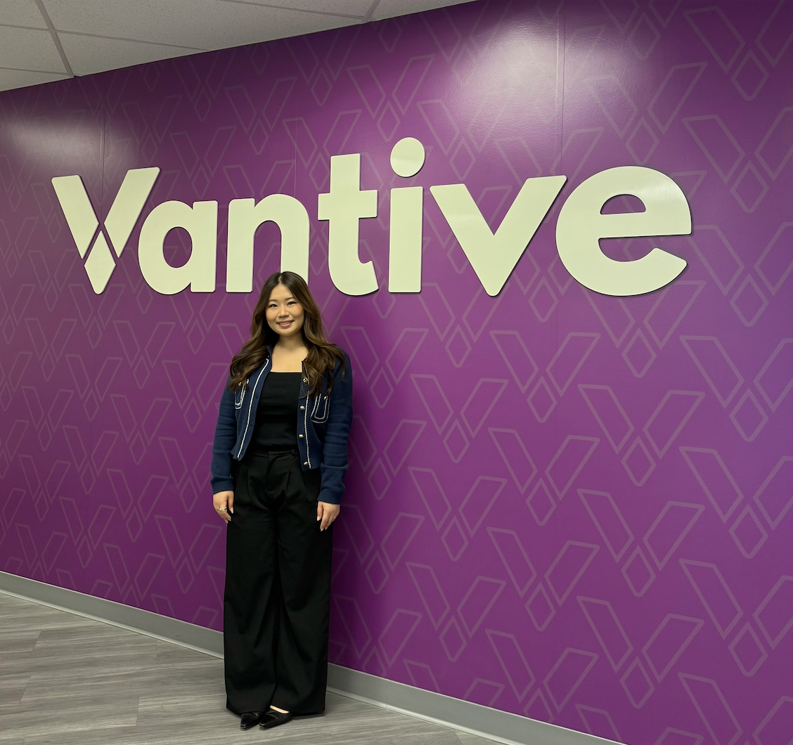

R&D internship at Vantive (formerly Baxter) working on next-generation renal care technologies. Details are under NDA.

As an R&D Exploratory & Innovation Engineering Intern, I worked on early-stage medical device innovation projects within a highly collaborative, multidisciplinary environment. My role involved investigating unmet user needs, translating insights into design opportunities, and rapidly developing and evaluating concepts through iterative prototyping and testing. Working closely with engineers, human factors specialists, designers, and commercial leads, I contributed to projects that balanced technical feasibility, clinical considerations, and user experience.
Role
R&D Intern
Timeline
Summer 2025
Methods
Medical Device Development, Human Factors Testing, Design Controls
Status
Under NDA
Due to confidentiality agreements, specific project details cannot be disclosed. The challenge centered on addressing a complex healthcare need within a medical device context, where existing solutions presented opportunities for improvement in usability, workflow integration, user experience, and overall effectiveness. Like many exploratory R&D efforts, the problem space was initially ambiguous and required significant discovery work to better understand user needs, constraints, and opportunities before converging on potential solutions.
Placeholder — walk through the research, iteration, and key decisions that shaped the final design.
Placeholder — describe results, impact, and any next steps or future directions.